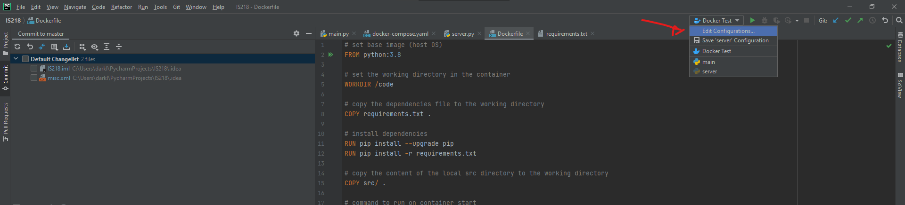
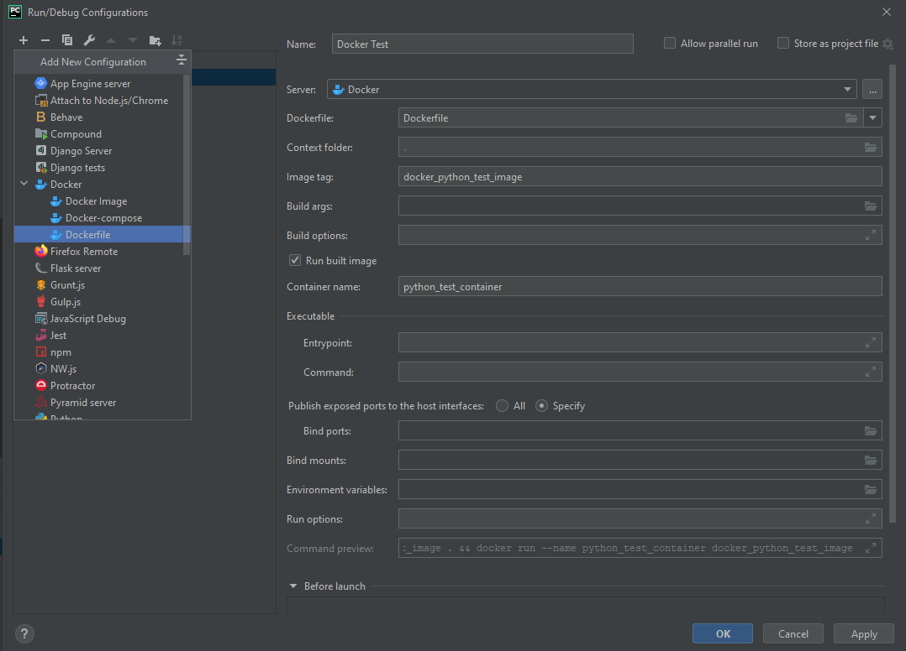
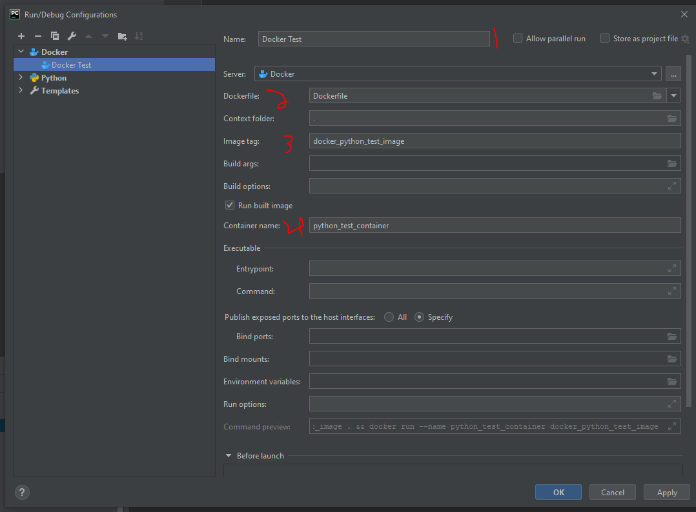
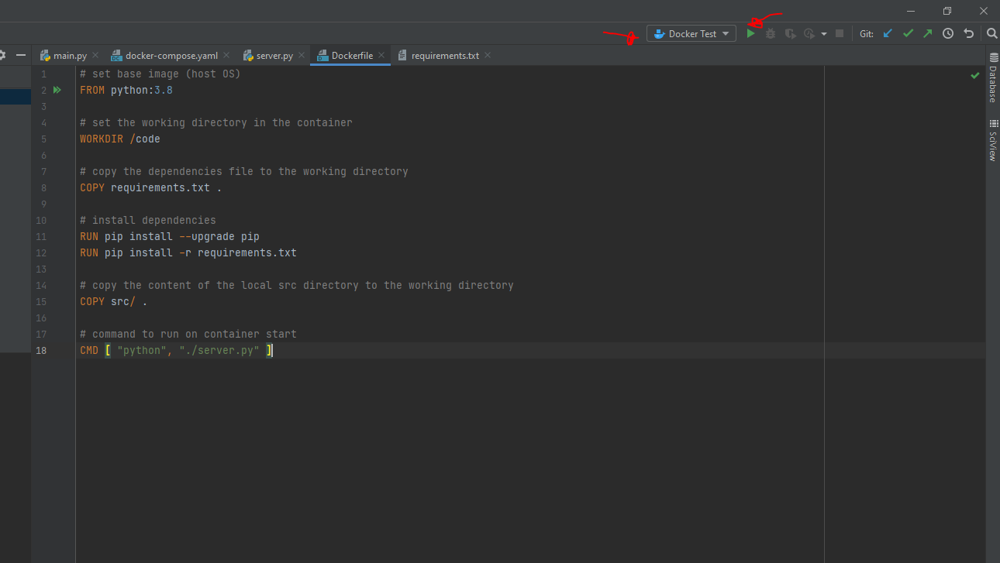
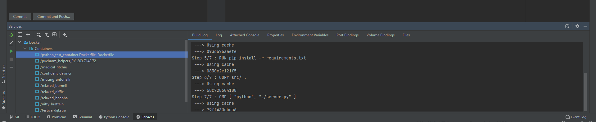
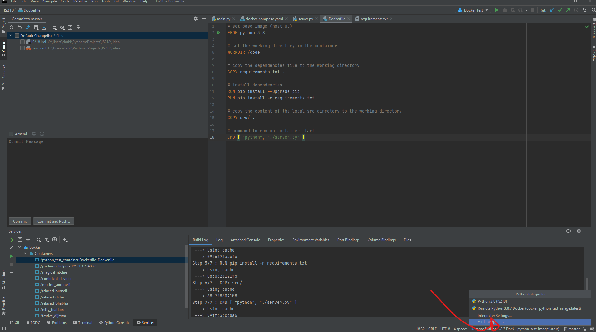
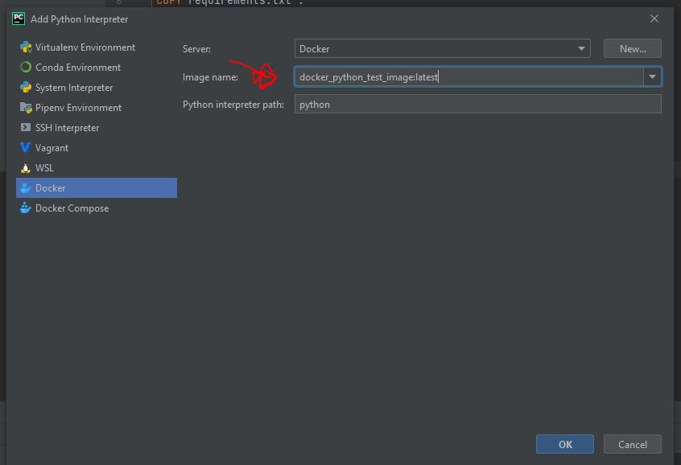
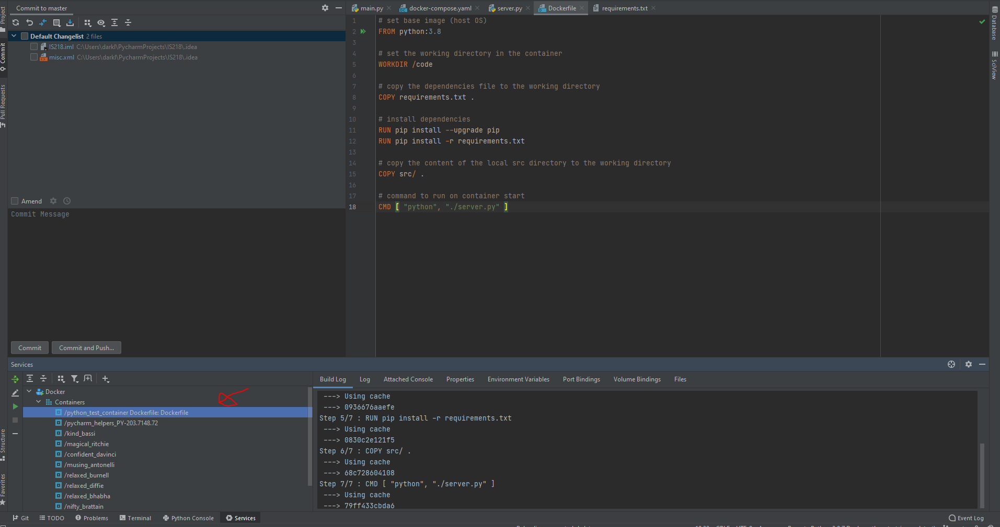

Docker Tutorial for Pycharm
In this tutorial we'll learn how to connect Docker with Pycharm.
Step 1
-Go to the top right of your Pycharm and click on
edit configurations...

Step 2
-Click on the plus sign and select your Docker file as your configuration.

Step 3
-Make sure you name you select a name, select the correct docker file, add an image tag and make sure you name your container. After you filled the empty fields, make sure you hit apply and ok.

Step 4
-After you finished step 3, go to the top right again, select your docker and hit the play button.

Step 5
-Docker should be running on the bottom of your screen like this, and it should give you an okay message.

Step 6
-Go to the bottom right corner of your Pycharm, click on the text and select
add interpreter

Step 7
-Select Docker from the items being shown, make sure you select the correct docker image that you created and make sure that your interpreter is the image that you just selected when you apply it by looking at the bottom right corner of Pycharm.

Step 8
-Click run again on the top right and your interpreter should appear on the bottom left hand side of your pycharm!

Congratulations! You connected Docker with Pycharm to write python code